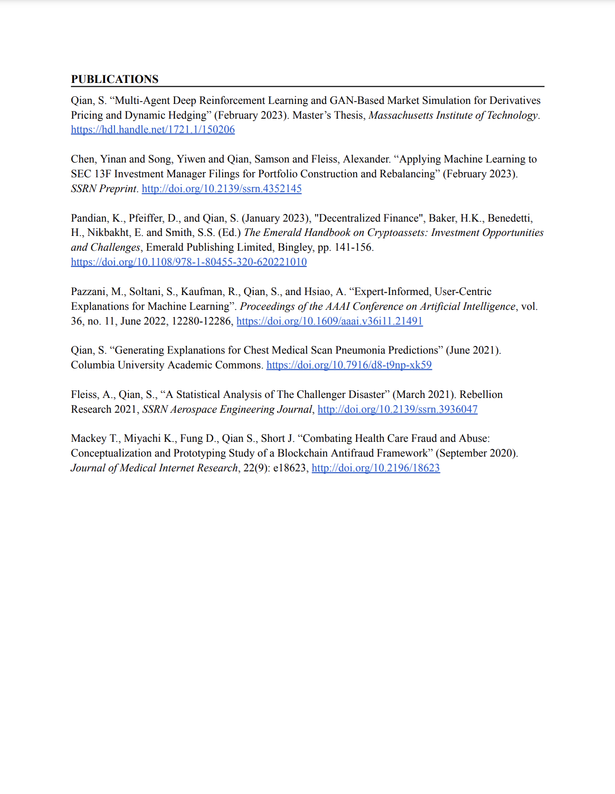

Research


Affiliations
Massachusetts Institute of Technology
Professor Leonid Kogan
SDSC, Spark AI - BlockLab
Dr. James Short
Research

Samson’s MIT thesis “Multi-Agent Deep Reinforcement Learning and GAN-Based Market Simulation for Derivatives Pricing and Dynamic Hedging” explores how GANs can be used as an alternative non-parametric approach to simulate and generate market data, as opposed to traditional Monte-Carlo methods that rely on assumptions about underlying distributions. This systematic framework becomes applied to deep hedging algorithms to train agents to find the optimal hedging policy. This deep reinforcement learning-based approach makes the dynamic hedging strategies more robust and precise compared to traditional greek hedging.
Publications
Multi-Agent Deep Reinforcement Learning and GAN-Based Market Simulation for Derivatives Pricing and Dynamic Hedging
MIT Libraries, DSpace@MIT
February 15, 2023
Show Publication 
MIT Thesis
Applying Machine Learning to SEC 13F Investment Manager Filings for Portfolio Construction and Rebalancing
SSRN
February 08, 2023
The Emerald Handbook on Cryptoassets: Investment Opportunities and Challenges (Decentralized Finance)
Emerald Publishing Limited
January 16, 2023
Show Publication 
DeFi, Stablecoins, Decentralized Exchanges (DEXs), Crypto Derivatives
Expert-Informed, User-Centric Explanations for Machine Learning
AAAI
Febuary 01, 2022
Show Publication 
[AAAI-22] Senior Member Presentation Track - Blue Sky
Generating Explanations for Chest Medical Scan Pneumonia Predictions
NSF, Columbia University - Academic Commons
May 01, 2021
Show Publication 
NSF Award 2026809 
NSF PAR 
Won 2nd place in the Columbia Academic Commons COVID-19 Research Paper Challenge
The Significance of Explainable AI in Finance and Asset Management
RebellionResearch.com
September 01, 2020
Combating Healthcare Fraud and Abuse: A Technology Assessment and Framework Leveraging Blockchain Technology
Journal of Medical Internet Research
Febuary 01, 2020
Show Publication 
SDSC Blocklab
Building a blockchain-based POC framework for submitting and validating medical claims to prevent fraud and abuse